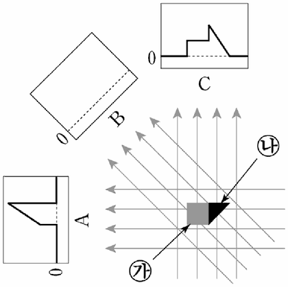

CT의 원리
지문을 먼저 읽고, 이해가 막히는 문단에서 ‘그림으로 보기’를 누르세요. 그림은 문단을 따라 바뀝니다.
1문단1895년에 발견된 X선은 진단의학의 혁명을 일으켰다. 이후 X선 사진 기술은 단면 촬영을 통해 입체 영상 구성이 가능한 CT(컴퓨터 단층촬영장치)로 진화하면서 해부를 하지 않고 인체 내부를 정확하게 진단하는 기술로 발전하였다.
2문단X선 사진은 X선을 인체에 조사하고, 투과된 X선을 필름에 감광시켜 얻어낸 것이다. 조사된 X선의 일부는 조직에서 흡수·산란되고 나머지는 조직을 투과하여 반대편으로 나오게 된다. X선이 투과되는 정도를 나타내는 투과율은 공기가 가장 높으며 지방, 물, 뼈의 순서로 낮아진다. 또한 투과된 X선의 세기는 통과한 조직의 투과율이 낮을수록, 두께가 두꺼울수록 약해진다. 이런 X선의 세기에 따라 X선 필름의 감광 정도가 달라져 조직의 흑백 영상을 얻을 수 있다. 그렇지만 X선 사진에서는 투과율이 비슷한 조직들 간의 구별이 어려워서, X선 사진은 다른 조직과의 투과율 차이가 큰 뼈나 이상 조직의 검사에 주로 사용된다. 이러한 X선 사진의 한계를 극복한 것이 CT이다.
3문단CT는 인체에 투과된 X선의 분포를 통해 인체의 횡단면을 영상으로 재구성한다. CT 촬영기 한쪽 편에는 X선 발생기가 있고 반대편에는 여러 개의 X선 검출기가 배치되어 있다. CT 촬영기 중심에, 사람이 누운 침대가 들어가면 X선 발생기에서 나온 X선이 인체를 투과한 후 맞은편 X선 검출기에서 검출된다.
4문단X선 검출기로 인체를 투과한 X선의 세기를 검출하는데, 이때 공기를 통과하며 감쇄된 양을 빼고, 인체 조직만을 통과하면서 감쇄된 X선의 총량을 구해야 한다. 이것은 공기만을 통과한 X선 세기와 조직을 투과한 X선 세기의 차이를 계산하면 얻을 수 있고, 이를 환산값이라고 한다. 즉, 환산값은 특정 방향에서 X선이 인체 조직을 통과하면서 산란되거나 흡수되어 감쇄된 총량을 의미한다. 이 값을 여러 방향에서 구하기 위해 CT 촬영기를 회전시킨다. 그러면 동일 단면에 대한 각 방향에서의 환산값을 구할 수 있고, 이를 활용하여 컴퓨터가 단면 영상을 재구성한다.
5문단CT에서 영상을 재구성하는 데에는 역투사(back projection) 방법이 이용된다. 역투사는 어떤 방향에서 X선이 진행했던 경로를 거슬러 진행하면서 경로상에 환산값을 고르게 분배하는 방법이다. CT 촬영기를 회전시키며 얻은 여러 방향의 환산값을 경로별로 역투사하여 더해 나가는데, 이처럼 여러 방향의 환산값들이 더해진 결과가 역투사 결괏값이다. 역투사를 하게 되면 뼈와 같이 감쇄를 많이 시키는 조직에서는 여러 방향의 값들이 더해지게 되고, 그 결과 다른 조직에서보다 더 큰 결괏값이 나오게 된다.
6문단역투사 결괏값들을 합성하면 투과율의 차이에 따른 조직의 분포를 영상으로 재구성할 수 있다. CT 촬영기가 조금씩 움직이면서 인체의 여러 단면에 대하여 촬영을 반복하면 연속적인 단면 영상을 얻을 수 있고, 필요에 따라 이 단면 영상들을 조합하여 입체 영상도 얻을 수 있다.
윗글을 바탕으로 <보기>와 같은 실험을 했을 때, B에 해당하는 그래프로 알맞은 것은? [3점]

그림: ㉮(회색 정사각형)와 ㉯(검은 직각삼각형)를 붙인 물체에 세 방향(A 왼쪽, B 왼쪽 위 45°, C 위쪽)으로 평행한 X선이 지나가고, A와 C 방향의 환산값 그래프가 그려져 있으며 B 방향은 빈 그래프" style="display:block;width:100%;max-width:360px;margin:8px auto 0">위의 그림처럼 단면이 정사각형인 물체 ㉮와 직각이등변 삼각형인 물체 ㉯가 연결된 를 CT 촬영기 안에 넣고 촬영하여 A, B, C 방향에서 구한 환산값의 크기를 그래프로 나타냈다. 이때 ㉮의 투과율은 ㉯의 2배이다.
* X선은 화살표와 같이 평행하게 진행함.
* 물체 의 밑면을 기준으로 A는 0° 방향, B는 45° 방향, C는 90° 방향의 위치에 있음.